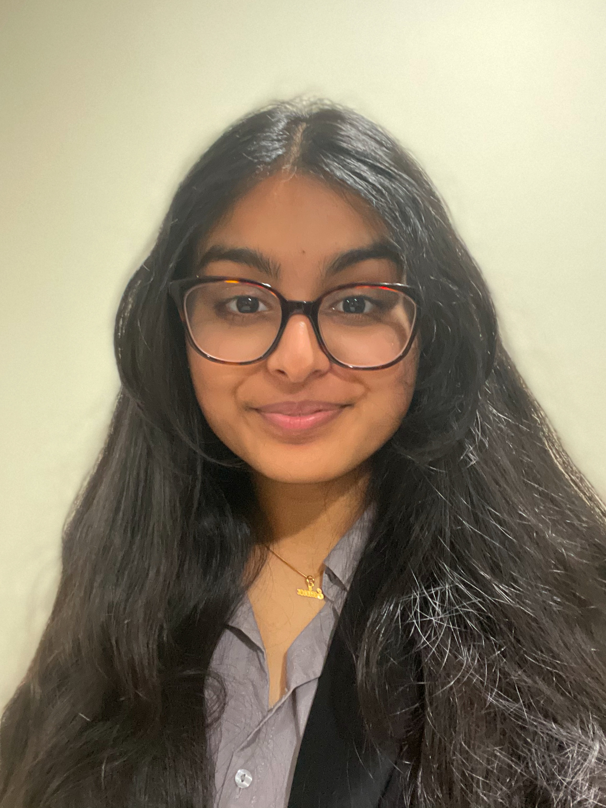
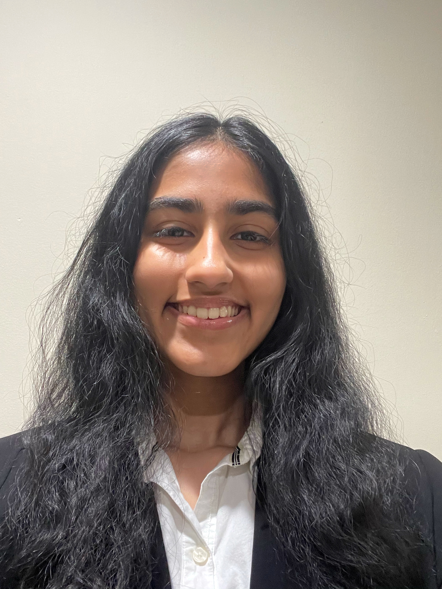

Saina
Saina Shibili is a current high school student at Thomas Jefferson High School for Science and Technology. She has a great enthusiasm for STEM, especially towards computer science. Throughout her academic career, she has been enrolled in advanced courses and excels in math. She's currently enrolled in AP Computer Science, AP Biology, Chemistry Honors, and Algebra II. Additionally, she also participates in her school's events such as Science Olympiad, National Junior Honor Society, and much more. She hopes to spread her joy of learning to others.
Riya
Riya Nilawar is a straight A, high school student, currently studying Calculus BC and Chemistry Honors. From a young age she has been enrolled in advanced courses and enjoys learning. She is focused on helping students grow and reach their academic goals. In addition to academics she participates in many STEAM driven organizations in her school such as robotics, Technology Student Association, engineering, and computer science. She hopes to spread her love of STEAM and inspire others.

Ramya
Ramya Radhakrishnan is a shining, high school student with a strong passion for mathematics. She has been enrolled in advanced math throughout her life and is currently studying Algebra II and Chemistry Honors. She is a strong leader in her community and participates in many clubs such as the Science Olympiad. She currently leads the engineering and technology branch of her Multi-Ed Club and aspires to help all students enjoy learning.